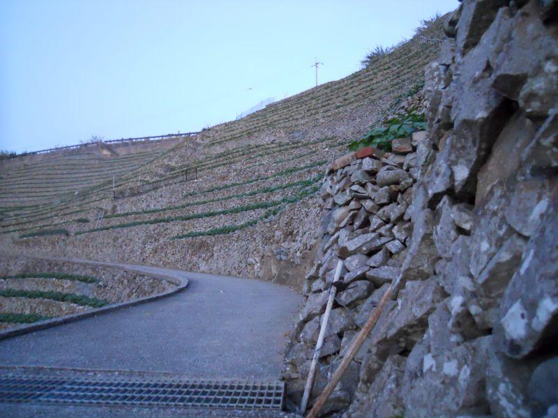
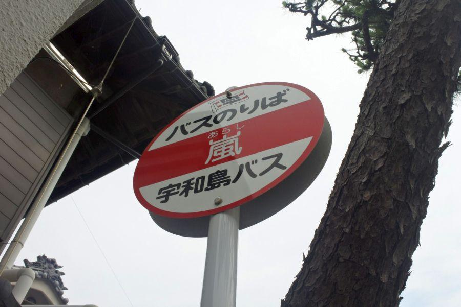
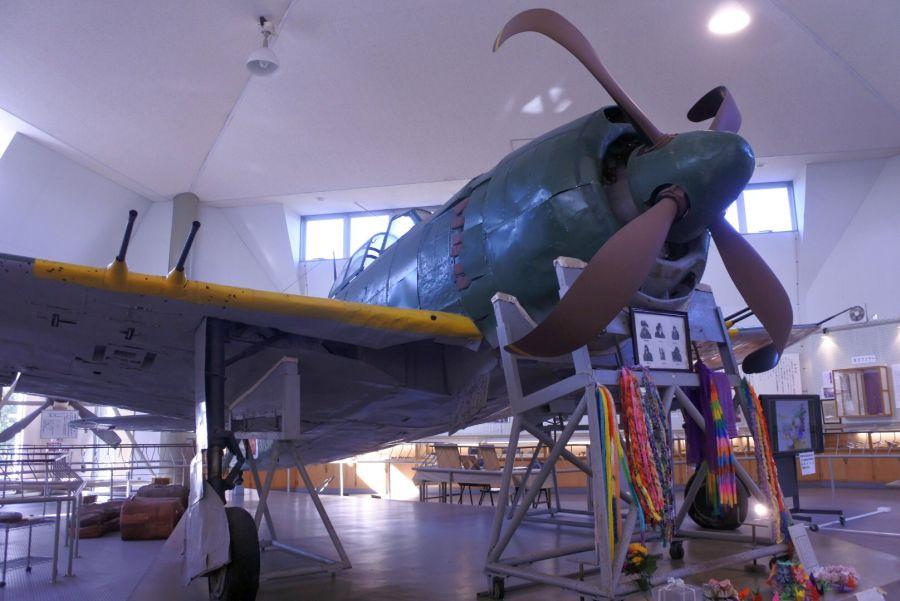

「耕して天に昇る」。最後まで残った段畑 < 遊子水荷浦 / 愛媛県宇和島市 >
愛媛県南部、南予(なんよ)地方。
水荷浦(水ヶ浦とも)
という、段畑が特徴的な集落が存在します。
地名の由来は、嫁に出てこの集落を離れても、帰省の際には「水」を「荷」に持参するくらい、水資源に乏しかったことに由来するそう。
そんな特殊な生活環境ゆえ発達した地域風土が、ここ水荷浦(みずがうら)集落にはあります。
要塞のような段畑

広く取られた駐車場に自家用車を停めて、水荷浦集落背後に広がる段畑に登らせてもらいます。
コンクリート舗装された道が 段畑中央に通っているので、そこを通行することができます。
この段畑、植わっている作物は...？
主には「じゃがいも」です。
今でこそポンプ等機械があり 作物に与える水を揚水することができますが、かつては天水頼り。それも 当地は雨が比較的少ない気候であり、なおかつ潮風が吹くとなると、デリケートな葉野菜等にとって 生育は厳しい環境。無事に育ったとしても、台風が来襲すると飛ばされてしまうリスクもある。
また、稲作ができるような平地や 水が無い。
そんな気候とロケーションゆえ、「いも」の栽培が適しています。
海を挟んで九州と向き合う場所なので、そこ(主には薩摩)の食文化と知恵が流入しているとも言えそうです。
じゃがいもを運ぶモノラック
畑の広さは大小さまざま。猫の額のような区画だってあります。
そこに張り巡らされているのが、
愛媛ではお馴染みの「みかんレール」こと「モノラック」。急傾斜地で作物の運搬を担う強い味方です。
水荷浦の段畑では みかんを作っているわけではなく、じゃがいもの栽培が盛ん。それを運搬することが モノラックの任務。みかん王国・愛媛県で、じゃがいもを運ぶモノラックは珍しい存在です。
先祖代々、手積みの石垣
開墾した土地で 土や砂が流出しないようにするためには、それを留める工夫が必要。
と言っても、畑を築いた時代に コンクリート等の近代的な資材はありません。
資材はその場所から出て来た石。それを運んで 崩れないように組んで、やっと作物を植えることができるようになります。
かと言って、石垣を組むだけでは食糧や金銭を得ることはできません。漁労など、他の仕事をしながら コツコツ石垣を組んでいったはず...。
水荷浦のような「圧巻」と言えるほどの段畑は、何世代、もしくは どれほどの時間をかけて築いたものでしょうか。想像し難いものがあります。
潮風浴びる段畑
段畑の上にやってきました。段畑の急傾斜っぷりがよくわかります。
入り組んだリアス式海岸が続く宇和海では、静かな内湾を利用した養殖業も盛ん。ここではタイやハマチの養殖がメインでしょうか。半農半漁の世界が広がっています。
ふもとの駐車場に併設されている「だんだん茶屋」さん。
「だんだん」の店名には「段々畑」と、当地・宇和島の方言「だんだん＝ありがとう」が込められているのだと思います。
そこに昔の水荷浦の写真が掲げられていました。
現在はじゃがいも栽培がメインですが、この当時は小麦も栽培していたことがわかります。
昔々の水荷浦では、農作物を売ったお金で食糧を得る暮らしはできなかったのではないでしょうか。現代のような 食べ物が溢れている飽食の世ではないでしょうし、この場所自体が街から離れているので 食べ物が回ってこない。
自分たちが生きていく食糧を得るためには、自分たちで食糧を自給する必要があります。苦難の末になんとか開墾することができた農地をもって、なんとか...
最後まで残った段畑

その昔は、宇和海一帯で段畑を見ることができたと言われていますが、これほど規模が大きなものを見ることができるのは 今や水荷浦だけ。
戦後も残っていた段畑は、
機械が入らない
傾斜地にあり労働がきつい
耕地が狭いため効率が悪いetc...
畑作としてはそのような悪条件と、新しい産業として 真珠の養殖に代表されるような現金収入を得る手立てができたため、次第に食糧は購入する時代へ移った。
それは全国どこでも起きた現象と言えます。ここでは 耕作放棄地となった段畑は、自然に帰っていきました。
この地方で 今では雑木林になっている斜面も、内部をよく見ると 石垣が組まれ、段畑が築かれた後を見ることができます。
遊子水荷浦の段畑
< 自家用車 >
高松駅から 約3時間30分、256km
松山空港から 約2時間、114km
※ 主な地点からの最速・最短距離
関連・近隣記事

2017,11/21 歩いて県境越えを実感できる古道・遍路道 < 松尾峠 / 高知県宿毛市・愛媛県愛南町 >
2017,12/19 印象的な銀杏の絨毯と、古堂がある寺院 < 禅蔵寺薬師堂 / 愛媛県 >

2017,12/25 ユニークな名前のバス停 < 土居仲、嵐 / 愛媛県 >

2018,1/24 県境越えを越えたことを知る手がかりあれこれ < 篠川橋 / 高知県宿毛市・愛媛県愛南町 >

2018,4/6 日本で唯一現存する紫電改。平和へのメッセージ < 紫電改 / 愛媛県愛南町 >

2019,3/2 日本一長い学校名 < 高知県宿毛市愛媛県南宇和郡愛南町篠山小中学校組合立篠山小学校 / 愛媛県愛南町 >